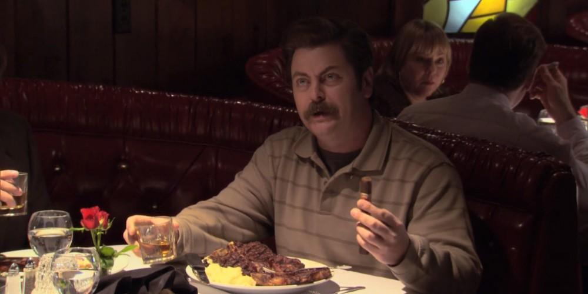

Turf N' Turf from Parks and Recreation

Goes well with whiskey and a cigar.
With the exception of Ben Wyatt's likely fandom, however, Lord of the Rings has nothing to do with the subject of today's episode: Parks & Rec's Ron Swanson. In wishing to celebrate the big 6M, Ron's favorite order at Charles Mulligan's Steakhouse seemed fitting: prime, dry-aged beef with a side of prime, dry-aged beef. Forgive me, for I have sinned.
Ingredients
PorterHouse Steak
- 24oz PorterHouse Steak
- Kosher Salt
- Vegetable Oil
T-Bone Steak
- 16oz T-Bone Steak
- 3 cloves crushed garlic
- Vegetable oil
- 5 Tbsp unsalted butter
- Rosemary sprigs
- Thyme sprigs
Mashed Potatoes
- 7 Yukon potatoes
- 1/2 cup half & half
- 5 Tbsp unsalted butter
- Kosher salt
- White pepper
Directions
PorterHouse Steak
- Place the steak on a wire rack set in a rimmed baking sheet. Cover with a generous sprinkling of kosher salt and let sit for at least 1 hour. If feeling adventurous, leave it in the fridge uncovered overnight.
- Heat vegetable oil in a heavy cast iron pan over high heat for about 5 minutes, until smoking.
- Pat the porterhouse as dry as humanly possible and place it into the cast iron pan. Let cook for about 2 minutes, until a deep brown, robust crust has formed on the first side. Give it a flip and repeat the process on the opposite side.
- If interested in trying the steak alla fiorentina, kill the heat and place the steak on the fatty side and sear. Then stand the steak upright on its bone.
- Place the steak (still upright) into a 450°F oven. Wait until the thickest part of the steak reaches an internal temperature of 120°F.
- Once the steak has reached the internal temperature of 120°F, plate and let rest for 10 minutes.
- To cut steakhouse style, remove the strip and filet mignon from the bone. Then slice and plate.
T-Bone Steak
- Place the steak on a wire rack set in a rimmed baking sheet. Cover with a generous sprinkling of kosher salt and let sit for at least 1 hour. If feeling adventurous, leave it in the fridge uncovered overnight.
- Heat vegetable oil in a carbon steel pan over high heat until smoking.
- Pat the steak as dry as humanly possible and place it into the cast iron pan. Let cook for about 2 minutes, until a deep brown, robust crust has formed on the first side. Give it a flip and repeat the process on the opposite side.
- Add 3 cloves of crushed garlic, a few sprigs of rosemary and thyme, and 5 tablespoons butter to the pan.
- Once the butter is melted, tip the pan towards the garlic and herbs and baste the steak with the hot herb butter. Do this until the thickest part of the steak registers at 125°F.
- Plate the steak and bathe it one last time with the herby, garlicky, brown butter.
- Let rest for at least 10 minutes before serving.
Mashed Potatoes
- Peel 7 Yukon gold potatoes and cut them into equally-sized pieces. Place into a large pot and cover with cold water. Bring to a boil and cook for at least 20 minutes, or until completely tender (a paring knife cuts through with no issue).
- Drain the potatoes and return them to the pot over medium-low heat. Cook and stir them around for about 1 minute.
- Kill the heat and add about ½ cup of half & half and 5 Tbsp of unsalted butter. Mash together until mostly mashed, then season liberally with kosher salt and white pepper.
- Mash them up the rest of the way and taste for seasoning and consistency.
- Cover and keep warm until ready to serve.
Back to main page